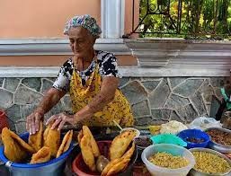
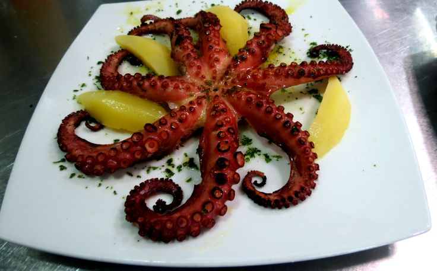

Gastronomía
Platos Típicos
Al visitar la Isla de Margarita te preguntarás ¿ Qué platos podemos degustar en tan amplia isla caribeña?. El pescado y los mariscos juegan un papel primordial en la gastronomía del Margariteño o Neoespartano, debido a que se muestran miles de variaciones culinarias entre una especie y otra.
En la categoría de los pescados los más populares son el cazón, la raya o el chucho guisado. En los pescados de enteros están la catalana, coro coro, carachana, carite, pargo, mero y jurel. En los mariscos encontramos las multitudinarias ostras, mejillones, pepitonas, camarones, langosta, langostinos, chipi chipi. A continuación te daremos una serie de platillos típicos de la Isla de Margarita con los que realzaras los deleites de tu paladar. La receta más utilizada es el Pescado Frito con ensalada rallada o mixta y tostón. La puedes solicitar en cualquier restaurant a la orilla de la Playa o en cualquier punto de la ciudad. El popular Pastel de Chucho, es una mezcla entre lo dulce del plátano maduro frito y lo salado del chucho (pescado de la región) con queso. Su preparación consiste en ir armando capas de papa sancochada en rodajas, chucho guisado, plátano maduro frito y en la parte superior crema bechamel o en su defecto huevo batido con una espolvoreada de queso. Posteriormente se lleva al horno durante 20 minutos.
Platos Principales
-

La empanada de cazón margariteña es una delicia típica de la Isla de Margarita. Se caracteriza por su masa de harina de maíz, que es frita hasta obtener una textura crujiente por fuera y suave por dentro. El cazón es un tipo de tiburón pequeño que se encuentra en las aguas del Caribe. El guiso de cazón se prepara desmenuzando la carne del cazón y cocinándola con un sofrito de cebolla, ajo, pimentón, tomate, ají dulce margariteño y otros condimentos, como el onoto que le da un color característico. Este guiso tiene un sabor muy particular, suave y ligeramente ahumado, que lo distingue de otros tipos de rellenos de empanadas.
-

Pulpo Margariteño un plato exquisito de pulpo, una receta sencilla de preparar que requiere ingredientes de primera calidad, como pulpo y tomates maduros. El resultado es un plato con una textura única y un sabor maravilloso, perfecto para deleitar a los comensales. Una receta que destaca por su versatilidad, permitiendo a los cocineros añadir sus propios toques personales. ¡Una excelente opción para los profesionales de la cocina!
-

Fosforera nació en Margarita, y según registros, se escuchó por primera vez en Porlamar tras la declaración de Puertos Francos en 1864. Se preparaba a leña, en ollas de barro, con mariscos frescos del día. Su nombre hace referencia al fósforo presente en los mariscos, mineral clave para la energía. Todo empieza con un buen caldo: cabezas de pescado, ají dulce, cebolla, ajo, pimentón y especias criollas. Luego vienen los protagonistas: mariscos frescos como “…pulpo,almeja, mejillón, gamba, calamar y pescado blanco” .